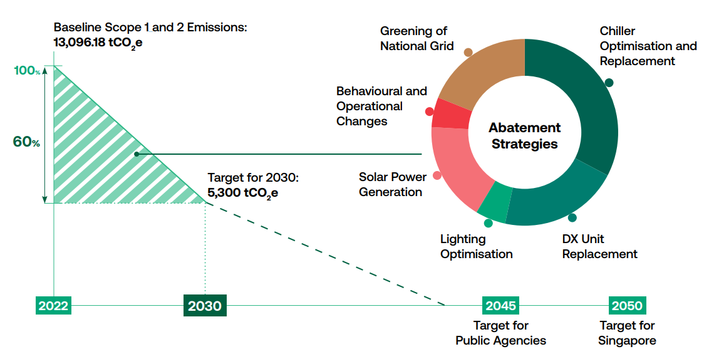
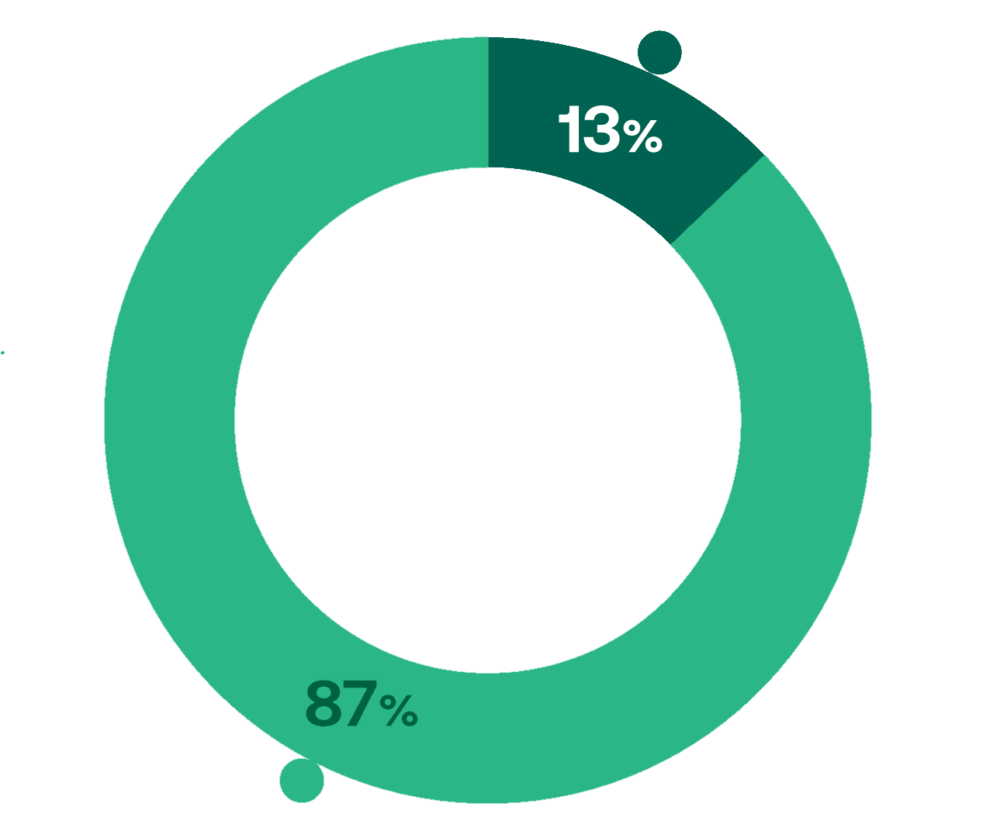
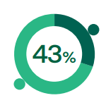
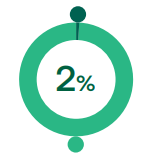

SP's 60-30 vision
SP’s 60-30 Vision is to reduce our greenhouse gas emissions by 60% by 2030, from the baseline year of 2022.

Principal's message: SP's 60-30 vision
“Singapore is committed to reaching net-zero GHG
emissions by 2050, with public agencies targeted to
do so around 2045.
As an educational institution, particularly one
responsible for about 10% of the country’s birth cohort,
SP should do more and reach net-zero emissions
even earlier. We will set an example with our 60-30
Vision—our goal is to reduce our GHG emissions by
60% by 2030, taking 2022 as the baseline year.”
- Soh Wai Wah
Principal & CEO of SP
SP's 60-30 vision
In FY2022, our Scope 1 and 2 greenhouse gas (GHG) emissions totaled 13,096.18
tCO2e. Approximately 60% of these emissions stemmed from electricity used for
air-conditioning, with an additional 10% resulting from refrigerant gases in
air-conditioning units.
We have set a goal to reduce our emissions by 60% by FY2030. To achieve this,
we plan to make significant changes to our campus infrastructure, particularly focusing on cooling and
lighting systems. These upgrades will be integrated with other necessary renovation projects to maintain
our facilities' suitability for learning and their intended purposes.
- SP Environmental Sustainability Disclosure FY2022

Our Progression: FY2022 Disclosures

(FY2018-FY2020)
(FY2018-FY2020)


SP's Academic Achievers
Singapore Polytechnic's Top Academic Achievers
| Student | Diploma | Awards | More Info |
|---|---|---|---|
| Mohamed Najulah | DBIT | Chua Chor Teck Gold Medal IMDA Gold Medal |
|
| Chong Han Lyn | DMC | Low Guan Onn Gold Medal Asia Fund Space Gold Medal |
|
| Kwek Ai Ling | DXPD | Toh Chin Chye Gold Medal DBS Bank Gold Medal Norton Prize |
|
| Pavan Singh Gill | DEEE | Lee Kuan Yew Award SMRT Gold Medal OCBC Prize The Institution of Engineers Gold Medal Award |
|
| Amanda Chia Siew Hui | DNHW | Singapore Food Manufacturers' Association Gold Medal Temasek Education Foundation Sunburst Scholarship Toh Chin Chye Gold Medal |